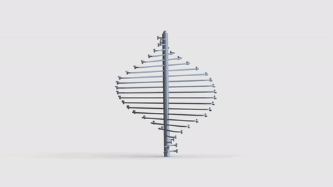

Kinetic Sculpture
The project was assigned for students to explore in-depth into kinetic sculptures. Students will be able to learn the mechanics and how kinetic sculptures function correctly and continuously. Students are encouraged to explore more on kinetic sculptures, since the possibilities are endless on the designs and the mechanics of them.
Upon further research on the kinetic sculptures, they seem highly visually appealing. The motion never ends and could go in a perfect loop where nothing would seem out of the ordinary (or choppy). Many of these sculptures are placed on landscape scenarios, however, there are also a handful of kinetic sculptures that are user-interactive, such as some where people have to crank the gear or flick a lever.
The project was assigned for students to explore in-depth into kinetic sculptures. Students will be able to learn the mechanics and how kinetic sculptures function correctly and continuously. Students are encouraged to explore more on kinetic sculptures, since the possibilities are endless on the designs and the mechanics of them.
Upon further research on the kinetic sculptures, they seem highly visually appealing. The motion never ends and could go in a perfect loop where nothing would seem out of the ordinary (or choppy). Many of these sculptures are placed on landscape scenarios, however, there are also a handful of kinetic sculptures that are user-interactive, such as some where people have to crank the gear or flick a lever.
PRESENTATION